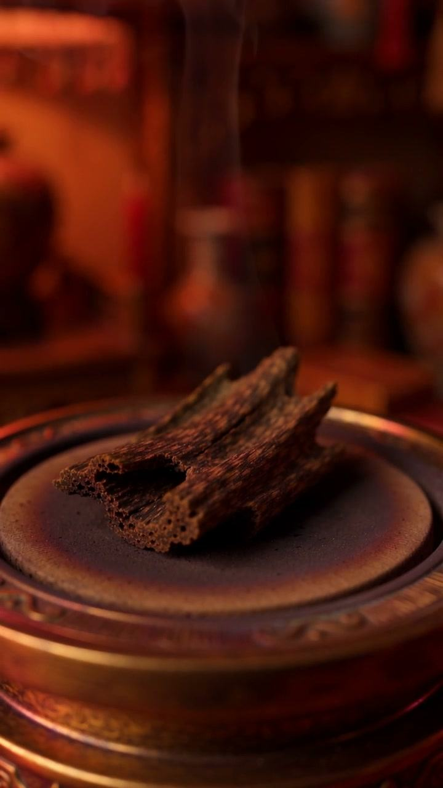

《中国药典》收载沉香：性味辛、苦，温；归脾、胃、肾经；行气止痛，温中止呕，纳气平喘。用于胸腹胀闷疼痛，胃寒呕吐呃逆，肾虚气逆喘急。
这是入药的记载，有配伍、剂量、炮制讲究，由医生开方。药典记载不等于日常保健品说明书，更不等于可以自行服用。
传统香文化认为沉香能静心安神，适合冥想、读书、品茶时用；古籍里也有沉香安神、助眠的记载。
这些是传统经验，是古人长期使用的总结，不是临床结论。经验有价值，但不能当成医学结论来宣传。
现代研究对沉香成分有分析：倍半萜、色酮类等成分已被分离鉴定，部分成分在实验室里显示出一定活性。
但针对具体疾病的临床疗效证据还有限。实验室里的活性，不等于吃下去能治病。沉香不能代替药物治病，有病要就医。
药典记载是入药的依据，不是保健品说明书。传统说法是经验，不是结论。现代医学的临床证据还有限。
买沉香为了闻香、佩戴、收藏，都可以；为了治病买沉香，是找错了地方。
不建议自行服用沉香（参考文章 47）。孕妇、小孩等特殊人群用香前问医生。
凡是宣称沉香能治某种病的，都是夸大宣传。功效的边界，恰恰是可信度的边界。